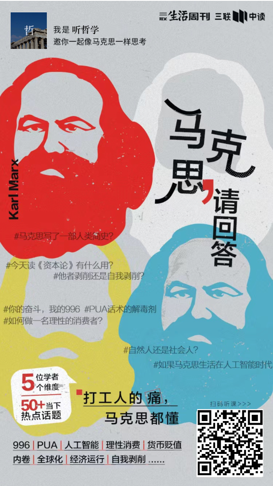
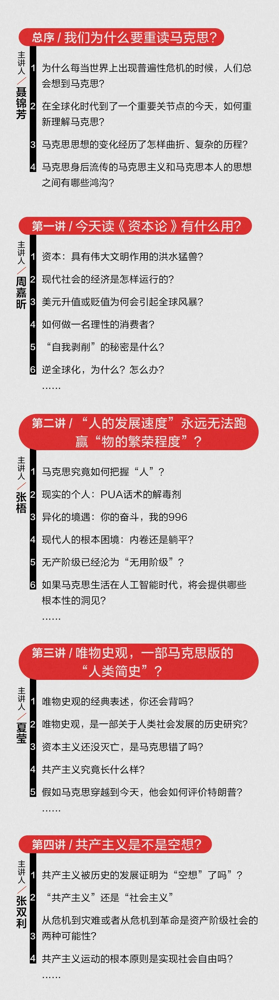
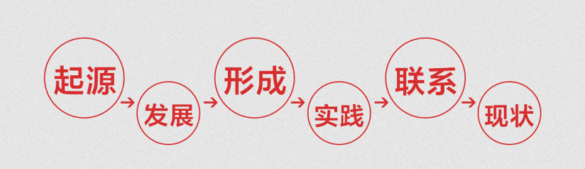

💡 马克思请回答：社会如此内卷，为什么？
Marx, please answer: Why is society so involuted?
马克思诞辰208周年纪念日
1818年5月5日－1883年3月14日
社会内卷的本质，是生产力发展到一定阶段后，生产关系未能同步调整，导致劳动边际收益递减、竞争从“向外开拓”转向“内部空转”的结构性困境。用马克思的视角看，内卷并非个体懒惰或贪婪的结果，而是资本逻辑下竞争不断激化、剩余价值被极致榨取，同时生产资料分配不公、劳动者被迫在有限资源内相互消耗的必然现象。1内卷是什么？“内卷”（involution）原指系统在外部扩张受阻时，转向内部精细化、复杂化，但总体效益停滞或下降。马克思本人未使用这个词，他在《资本论》中揭示的资本积累规律、相对过剩人口、竞争异化，恰好为内卷提供了完整的分析框架。
简言之，内卷是资本逻辑驱动下，持续投入劳动却回报递减、自由时间被剥夺、创新被模仿竞争淹没的均衡陷阱——它不是暂时的不景气，而是生产方式的常态化痼疾。2为什么技术进步消灭不了内卷？按照理想，生产力发展应缩短工作日，让人自由发展。但内卷反其道而行，原因在于资本主义生产关系的限制：①生产资料私有制：机器解放的劳动力不能转化为全民福利，反而变成失业威胁。技术进步创造的价值被资本攫取，工人只获得维持生存的工资。
②剩余价值最大化逻辑：任何节省劳动的技术，首先用于减少雇佣人数、增加剩余劳动时间，而非缩短总劳动时间。
③消费主义与债务杠杆：劳动者被房贷、教育、医疗等刚性支出捆绑，必须维持高强度工作，失去退出竞争的选项。
技术提升 → 相对过剩人口 → 就业竞争激化 → 内卷加剧 → 劳动者更依赖工资 → 资本进一步压低工资 → 消费不足危机 → 需求萎缩 → 内卷延续。
教育：学历贬值为“筛选信号”，而非能力提升。教育投资变成防御性竞争——别人报班，你不得不报；劳动市场对学历要求水涨船高，与真实生产力脱节。
职场：无效加班、形式主义汇报、过度考核。马克思称之为“劳动对资本的实际上的从属”——劳动者必须表现得极其忙碌，尽管实际产出并未提高。
平台经济：算法将劳动过程切碎、量化、竞价。骑手、司机在“抢单”中自我竞速，单价不断下降。马克思会指出：这是竞争在工人内部无限细化，资本利用技术实现了无中心却极高效的剥削控制。
内卷不是人类本性，也不是永恒现象。当生产力发展到一定程度，继续在现有生产关系下内卷，会导致实体经济利润率下降，资本涌入金融、地产等投机领域（“脱实向虚”）；劳动者普遍感到“越努力越穷”，社会总需求不足，引发危机。
危机的解决要么是破坏性的（战争、衰退、大规模失业），要么是生产关系的调整——例如缩短法定工作时间、强化工会议价权、对资本收益征税以支撑全民基本服务、将部分竞争领域转为公共品。
在马克思的逻辑看来，只有让劳动重新获得对生产资料的支配权，使技术服务于缩短劳动时间而非制造焦虑，内卷才会真正消解。

早在一百多年前，马克思就已经预言了今天的局面。
他解释了之所以出现“卷又卷不赢，躺又躺不平”的现象，是因为劳动力跟劳动者相互分离以后所带来的自我的人格分裂。想摆脱困境，就必须去摆脱资本逻辑。
关于“内卷”，马克思更是一针见血地指出：“工人之间的竞争，使资本家能够压低劳动价格。”
“社畜”这个词，马克思也在“异化劳动”理论中有类似的比喻。通俗来讲就是人与人的类本质相互异化会使人越劳动越觉得自己不是人，是磨盘边上不断赚钱的驴。
现代流行的“鼓吹奋斗”的成功学，马克思也早就提醒我们要避开陷阱。他强调人是社会关系的总和，每一个人的生存境遇都有着一定的社会环境，我们不能忽略了社会环境，把一切的不幸都归结为个人的无能。
卡尔·马克思（Karl Heinrich Marx），1818—1883
其实，作为人类历史上最为重要的思想家之一，
马克思为我们提供的远不止这些“预言”，而是一套完整的、包含万事万物的概念体系。
，并且对我们当下有非常重要的指导意义。

扫码订购 - 三联中读APP（手机号登录）- 收听
事实上，不只职场困境，每当世界上出现普遍性危机时，人们总会想到马克思。
全球化带来的贫富差距加剧，
数字货币和数字劳动的发展，
电子支付方式的革新带来的消费变化。
面对资本形态的快速转变，马克思关于资本、生产和劳动等理论研究，依然能为我们提供寻找应对措施的灵感。
而最近ChatGPT的大火，
我们对人工智能是否会取代人的担忧，
也已经印证了马克思的预见——
“人的发展速度”永远无法跑赢“物的繁荣程度”。
因此，无论是经济、政治，还是职场、人生，当未来的不确定性越加剧，我们越要重读马克思。
然而，即便接触到马克思经典著作，我们很容易采取的是断章取义和寻章摘句的做法，这对于理解马克思及其学说来说，难免以偏概全。
为了让大家真正回到马克思的思想世界，看透社会复杂问题的本质，三联中读郑重推出精品课
《马克思，请回答——如何用<资本论>看透今天的世界？》
，邀你一起，在全球化时代到了关键点的今天，重新理解马克思、理解世界。
透过伟大的思想找准自己的人生坐标，在喧嚣的世界中做一个明白人。
▼长按下图识别二维码，加入课程

我们请到了5位来自清华、北大、复旦、南大的马克思领域专家，以政治经济巨著《资本论》为蓝本，带你一起探索现实议题解决之道。
总序「我们为什么要重读马克思？」由
带来，他是北京大学哲学系教授、北京大学马克思主义文献研究中心主任。
第一讲「今天读《资本论》有什么用？」由
带来，他是南京大学哲学系马克思主义哲学专业教授。
第二讲「“人的发展速度”永远无法跑赢“物的繁荣程度”？」由
带来，他是北京大学哲学系助理教授、中国人学学会秘书长。
第三讲「唯物史观，一部马克思版的“人类简史”？」由
带来，她是清华大学人文学院哲学系长聘教授。
第四讲「共产主义是不是空想？」由
带来，她是复旦大学哲学学院教授、副院长。
这种高规格的阵容，即使是一流高校的学生，也很难享受到。
五位老师，聚焦于马克思的经典理论，从5个维度深入剖析，让你从思想到经济、社会，获得全方位的思维提升。

除了《资本论》之外，课程还涉及马克思关于经济、社会历史、哲学、文化等领域的经典著作。
例如：《关于费尔巴哈的提纲》《德意志意识形态》《共产党宣言》《黑格尔法哲学批判》《1844年经济学哲学手稿》……
现实议题为纬，观照当下生活
为什么别人的奋斗，对你而言却是痛苦的996？
内卷还是躺平？现代人的根本困境要如何解？
“自我剥削”的秘密是什么？如何不被PUA？
逆全球化，为什么？怎么办？
课程把马克思理论学说放到当今世界中看，从你每天都在关心的事情切入，打开你的认知视野。
500+分钟精讲，构建全新思考体系
这门课程以马克思思想的起源讲起，一路关联发展、形成、实践、联系、现状。
从历史背景到理论演变再到实践应用，再现伟大思想形成过程，为你的思维重建，提供历史借鉴。

想洞悉自我、社会、世界的你
想研究马克思及其著作却不得其门而入的你
想带领孩子建立完整世界观的你
5把洞悉世界运行规律的密钥
1种看懂社会、理解自我的全新视角
n个透过表象看清事物本质的方法论
如何用资本论看透今天的世界？